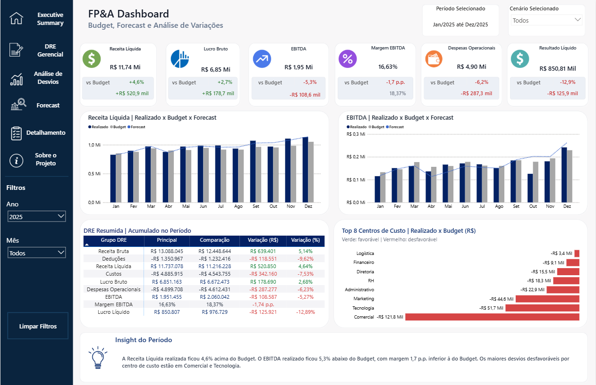
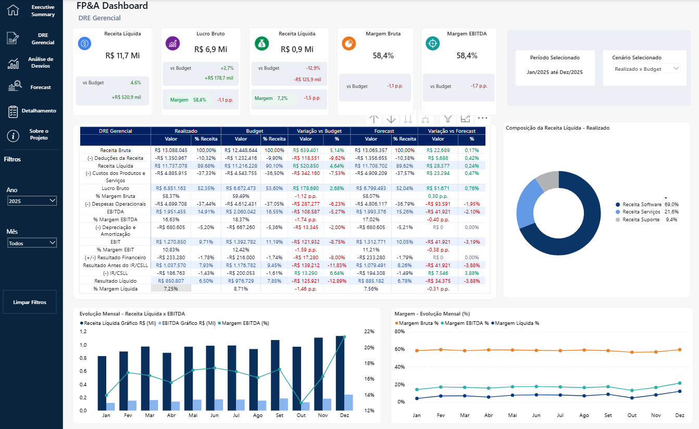
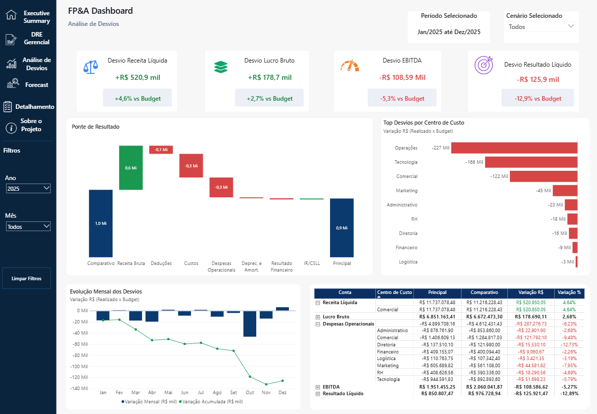
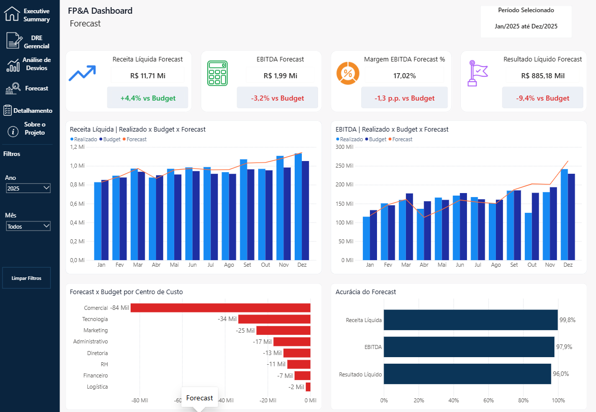
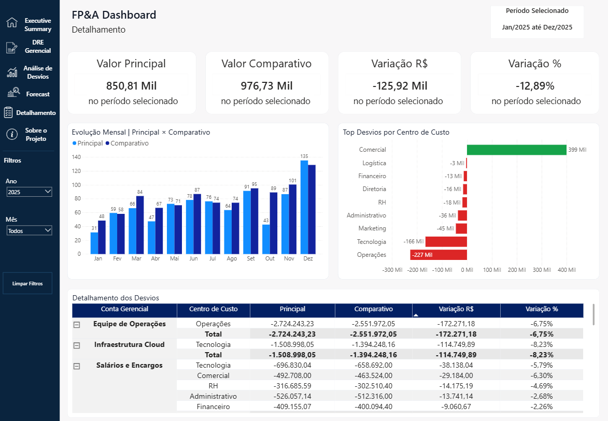
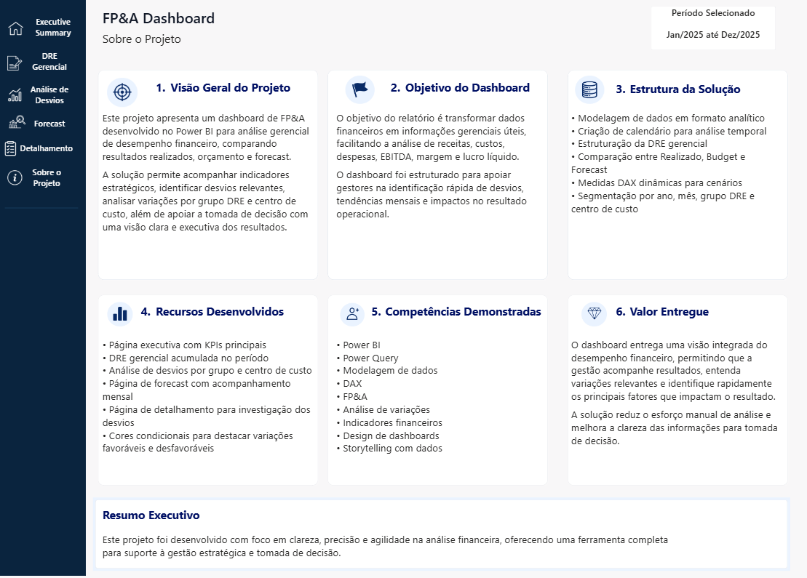

O desafio
Reunir diferentes cenários financeiros em uma leitura única, reduzindo a dependência de análises manuais e facilitando a identificação das causas por trás dos desvios de performance.
Solução gerencial desenvolvida para consolidar a DRE e comparar Realizado, Budget e Forecast em uma única experiência analítica. O dashboard transforma variações financeiras em sinais claros sobre receita, rentabilidade, despesas, EBITDA e resultado líquido.
Reunir diferentes cenários financeiros em uma leitura única, reduzindo a dependência de análises manuais e facilitando a identificação das causas por trás dos desvios de performance.
Um dashboard executivo com navegação orientada à análise, indicadores dinâmicos e detalhamento por conta e centro de custo, permitindo alternar entre Realizado x Budget, Realizado x Forecast e Budget x Forecast.
Conheça as seis páginas desenvolvidas para acompanhar a performance financeira, investigar desvios e apoiar o processo de planejamento. Clique em uma imagem para visualizá-la em tamanho completo.
As telas desta apresentação pública utilizam dados sintéticos e demonstrativos. Informações empresariais, bases de origem e demais elementos identificáveis foram preservados.






O modelo foi estruturado para responder às perguntas mais frequentes de uma rotina de planejamento e acompanhamento financeiro.
Comparação dinâmica entre cenários com títulos, valores, percentuais e regras de cor coerentes com a seleção do usuário.
Leitura estruturada de receita, custos, despesas, EBITDA e resultado líquido, com expansão hierárquica e variações em valor e percentual.
Identificação dos impactos favoráveis e desfavoráveis por conta e centro de custo, apoiada por gráfico de ponte e ranking de variações.
Acompanhamento da tendência e do acumulado ao longo do ano para distinguir eventos pontuais de movimentos recorrentes.
Monitoramento de margem EBITDA e resultado líquido com comparativos em pontos percentuais e alertas visuais.
Navegação por ano, mês e cenário, com botão de limpeza e interações coordenadas entre cartões, gráficos e matriz.
Camada de visualização, navegação, interações e storytelling financeiro.
Cálculos de cenário, variação, percentuais, margens, formatação e cores condicionais.
Tratamento, padronização e preparação das bases para o modelo analítico.
Estrutura de dados preparada para análises por período, conta e centro de custo.
Regras de negócio alinhadas à DRE, ao orçamento e à revisão de forecast.
Hierarquia visual, consistência semântica e foco nos indicadores acionáveis.
O dashboard estabelece uma camada única de acompanhamento financeiro e transforma o processo de análise em um fluxo mais objetivo, rastreável e orientado à ação.